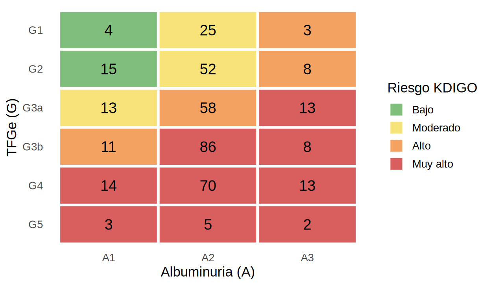

library(tidyverse)
source("R/funciones_epi.R")
source("R/limpiar_registro.R") # resumen de lo hecho en 5.1 a 5.3
registro <- read_csv("Bases/registro_nefro_sucio.csv") |>
limpiar_basico() |>
# nos quedamos con una fila por paciente (la depuración de duplicados se explica en 5.5)
group_by(id_paciente) |> slice_max(fecha_registro, n = 1, with_ties = FALSE) |> ungroup()Variables nefrológicas: unidades, TFGe y categorías KDIGO
Con las categorías y las fechas ya estandarizadas (5.1–5.3), el siguiente paso es el corazón clínico de la base: pasar la creatinina a una sola unidad, estimar la TFGe y clasificar al paciente según KDIGO.
Paso 1: convertir texto a número (cuidado con la coma decimal)
creatinina llegó como texto porque algunos valores usan coma decimal ("1,45") y otros ND:
registro |> count(es_texto_con_coma = str_detect(creatinina, ","), nd = creatinina == "ND")# A tibble: 3 × 3
es_texto_con_coma nd n
<lgl> <lgl> <int>
1 FALSE FALSE 311
2 FALSE TRUE 8
3 TRUE FALSE 101Reemplaza la coma por punto antes de convertir y convierte ND en faltante:
registro <- registro |>
mutate(creat = creatinina |> na_if("ND") |> str_replace(",", ".") |> as.numeric())
summary(registro$creat) Min. 1st Qu. Median Mean 3rd Qu. Max. NA's
0.700 1.250 1.790 24.899 2.893 400.000 8
Advertencia⚠️ Error clásico:
parse_number() con la coma decimal y los puntos
parse_number("2.39", locale = locale(decimal_mark = ",")) devuelve 239, porque con coma decimal el punto se interpreta como separador de miles. Si tu columna mezcla 1,2 y 1.2, usa str_replace(",", ".") y luego as.numeric(). Siempre revisa el rango después de convertir: creatinina de 239 mg/dL es imposible.
Paso 2: una sola unidad (mg/dL)
El máximo de creat es enorme porque ~15 % está en µmol/L. La columna unidad_creat indica cuál es cuál:
# A tibble: 2 × 4
unidad_creat n minimo maximo
<chr> <int> <dbl> <dbl>
1 mg/dL 357 0.7 5.76
2 umol/L 63 62 400 Los valores en µmol/L (ej. 140) son 88.4 veces mayores. Conversión: mg/dL = µmol/L ÷ 88.4.
Min. 1st Qu. Median Mean 3rd Qu. Max. NA's
0.700 1.190 1.630 1.792 2.191 5.760 8
Tip💡 Tip práctico: si no hubiera columna de unidad
Puedes inferir la unidad por el rango: valores > 20 mg/dL son prácticamente imposibles como creatinina sérica en adultos, así que probablemente están en µmol/L. Pero confirma con la fuente: una regla de rango puede equivocarse con pacientes en insuficiencia renal extrema.
Paso 3: TFGe por CKD-EPI 2021
La ecuación CKD-EPI 2021 (sin coeficiente de raza) con creatinina es:
\[ \text{TFGe} = 142 \times \min\!\left(\frac{Scr}{\kappa}, 1\right)^{\alpha} \times \max\!\left(\frac{Scr}{\kappa}, 1\right)^{-1.200} \times 0.9938^{\text{edad}} \times 1.012\ [\text{si mujer}] \]
con \(\kappa = 0.7\) (mujeres) o \(0.9\) (hombres), y \(\alpha = -0.241\) (mujeres) o \(-0.302\) (hombres); \(Scr\) en mg/dL, resultado en mL/min/1.73 m². La función ckd_epi_2021() del libro la implementa.
Antes de usarla, compruébala con un caso que puedas calcular a mano: hombre de 50 años y creatinina 1.0 mg/dL:
ckd_epi_2021(creat_mgdl = 1.0, edad = 50, sexo = "M") # ≈ 91.7[1] 91.69148# a mano: 142 × (1.0/0.9)^-1.2 × 0.9938^50
142 * (1.0 / 0.9)^-1.2 * 0.9938^50[1] 91.69148# Edad: usamos la calculada desde las fechas (5.3), no la registrada (tiene errores)
registro <- registro |>
mutate(edad_calc = as.integer(floor(lubridate::time_length(
lubridate::interval(fecha_nac, fecha_de_ingreso), "years"))),
tfge = ckd_epi_2021(creat_mgdl, edad_calc, sexo))
registro |> select(id_paciente, sexo, edad_calc, creat_mgdl, tfge) |> head(5)# A tibble: 5 × 5
id_paciente sexo edad_calc creat_mgdl tfge
<chr> <chr> <int> <dbl> <dbl>
1 P001 M 49 1.09 83.2
2 P002 F 44 0.85 86.6
3 P003 F 35 1.99 33.0
4 P004 F 72 2.3 22.0
5 P005 F 49 2.83 19.8summary(registro$tfge) Min. 1st Qu. Median Mean 3rd Qu. Max. NA's
8.823 29.035 43.669 47.574 61.072 120.952 8
Advertencia⚠️ Cuidado con la TFGe
- Edad correcta: la edad del cálculo debe ser la del momento de la medición (aquí, la calculada desde las fechas).
-
Sexo: la ecuación usa sexo biológico; una categoría faltante produce TFGe
NA. - Ecuación y unidad: CKD-EPI 2021 devuelve mL/min/1.73 m² (indexada). Para dosificar fármacos algunos protocolos usan la TFGe no indexada (× superficie corporal / 1.73).
- No uses Cockcroft-Gault para clasificar la ERC; solo para ciertas decisiones de dosis según la ficha técnica del fármaco.
- La TFGe por creatinina no es válida en insuficiencia renal aguda (creatinina inestable).
Paso 4: categorías KDIGO (G y A) y riesgo
La clasificación KDIGO combina TFGe (G1–G5) y albuminuria (A1–A3) para estimar el riesgo:
| Categoría G | TFGe (mL/min/1.73 m²) | Categoría A | UACR (mg/g) | |
|---|---|---|---|---|
| G1 | ≥ 90 | A1 | < 30 | |
| G2 | 60–89 | A2 | 30–300 | |
| G3a | 45–59 | A3 | > 300 | |
| G3b | 30–44 | |||
| G4 | 15–29 | |||
| G5 | < 15 |
# A tibble: 7 × 2
cat_g n
<ord> <int>
1 G1 32
2 G2 76
3 G3a 85
4 G3b 107
5 G4 102
6 G5 10
7 <NA> 8colores <- c(Bajo = "#7FBF7B", Moderado = "#F7E37A", Alto = "#F4A261", `Muy alto` = "#D95F5F")
registro |>
filter(!is.na(cat_g), !is.na(cat_a)) |>
count(cat_g, cat_a) |>
complete(cat_g, cat_a, fill = list(n = 0)) |>
mutate(riesgo = riesgo_kdigo(cat_g, cat_a)) |>
ggplot(aes(cat_a, fct_rev(cat_g), fill = riesgo)) +
geom_tile(color = "white", linewidth = 1.2) +
geom_text(aes(label = n), size = 5) +
scale_fill_manual(values = colores, name = "Riesgo KDIGO") +
labs(x = "Albuminuria (A)", y = "TFGe (G)") +
theme_minimal(base_size = 13) + theme(panel.grid = element_blank())
# A tibble: 4 × 3
riesgo n pct
<ord> <int> <chr>
1 Bajo 19 4.7%
2 Moderado 90 22.3%
3 Alto 80 19.9%
4 Muy alto 214 53.1%
Advertencia⚠️ Cuidado con los límites de las categorías
categoria_g() usa intervalos abiertos por la derecha: 60.0 → G2, 59.9 → G3a. Verifica los bordes con un ejemplo: categoria_g(c(14.9, 15, 29.9, 30, 59.9, 60, 89.9, 90)).
Otras variables derivadas útiles
registro <- registro |>
mutate(
peso = na_if(peso_kg, 0), # 0 = error de digitación (5.5)
imc = peso / (talla_cm / 100)^2,
superficie_corporal = sqrt(talla_cm * peso / 3600), # Mosteller, m²
tfge_no_indexada = tfge * superficie_corporal / 1.73 # mL/min
)
registro |> select(id_paciente, imc, superficie_corporal, tfge, tfge_no_indexada) |> head(4)# A tibble: 4 × 5
id_paciente imc superficie_corporal tfge tfge_no_indexada
<chr> <dbl> <dbl> <dbl> <dbl>
1 P001 24.4 1.62 83.2 77.9
2 P002 23.6 1.66 86.6 82.9
3 P003 38.1 2.24 33.0 42.7
4 P004 30.4 1.82 22.0 23.2
Importante🎯 En resumen
- Texto → número: reemplaza la coma por punto y revisa el rango.
- Una sola unidad: creatinina en mg/dL (µmol/L ÷ 88.4).
- Valida la función de TFGe con un caso calculable a mano antes de aplicarla a toda la base.
- Usa la edad calculada del momento de la medición.
- KDIGO: G (TFGe) × A (UACR) → riesgo (bajo, moderado, alto, muy alto). Verifica los bordes de las categorías.
- Documenta qué ecuación usaste: CKD-EPI 2021 sin raza.
Ejercicio
- ¿Qué proporción de pacientes está en G3b o peor? ¿Y con A3?
- Calcula la TFGe de los mismos pacientes con una ecuación diferente (por ejemplo, CKD-EPI 2009 sin raza:
141 × min(Scr/κ,1)^α × max(Scr/κ,1)^-1.209 × 0.993^edad × 1.018 (mujer), κ = 0.7/0.9, α = −0.329/−0.411) y compara cuántos cambian de categoría G. - ¿Cuántos pacientes tienen creatinina
NA? ¿Qué implica para el análisis?